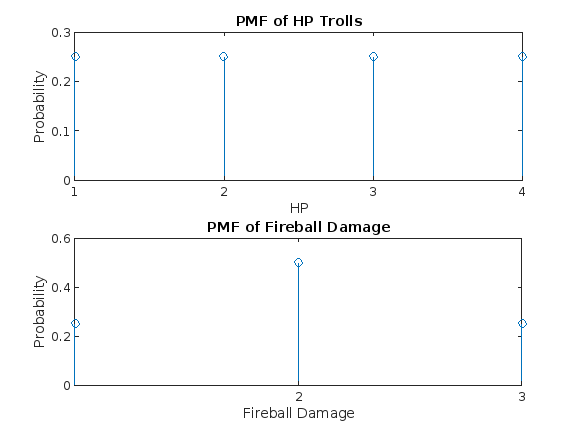

Project 1: DND
Nishat Ahmed, Nicolette Thiro, Armaan Kapoor
Contents
Epic Question 2. Wizards, Trolls and Warriors.
Despite being completely average, there is a mighty and powerful wizard named Keene, who is suddenly ambushed by a menacing group of trolls. The reason for the trolls hatred of Keene is unclear, but they are often heard screeching the word “stochastics” in a bloody rage. Every troll has 1d4 hit points, which are the amount of damage they can take before dying. The wizard Keene has unfortunately been out drinking the night before, and can only remember 1 spell, FIREBALL, which does 2d2 damage to everything within range. For example if a troll has 3 HP, and the FIREBALL does 3 points of damage, the troll is dead.
trials = 1000000; HP_roll = sum((randi([1,4], 1, trials)), 1); %1d4 HP for every troll fireball_roll = sum(randi([1,2], 2, trials), 1); %fireball does 2d2 damage %a: What is the average number of hit points that each troll has? % What is the average amount of damage the FIREBALL spell does? % Find a bound on the probability that the FIREBALL does greater than 3 points of damage. HP_avg = sum(HP_roll)/trials; %avg number of HP (hit points) each troll has fprintf("Average number of HP each troll has: %f\n", HP_avg); fireball_avg = sum(fireball_roll)/trials; %avg amount of fireball spell damage fprintf("Average amount of damage fireball spell does: %f\n", fireball_avg); %bound on the probability that fireball spell does damage greater than 3 points count = 0; for i=1:trials if fireball_roll(i) > 3 %count instances of greater than 3 points of damage count = count + 1; end end fireball_prob = count/trials; % get probability of more than 3 points of damage fprintf("Bound on probability that fireball spell does greater than 3 points of damage: %f\n", fireball_prob); %b: Write the probability mass functions for the amount of damage the FIREBALL does and the amount of hit points trolls have. %pmf for fireball damage pmf_fireball(1) = sum(fireball_roll==2)/size(fireball_roll, 2); %fireball does 1 point damage pmf_fireball(2) = sum(fireball_roll==3)/size(fireball_roll, 2); %fireball does 2 points damage pmf_fireball(3) = sum(fireball_roll==4)/size(fireball_roll, 2); %fireball does 3 points damage %pmf for HP trolls have %pmf for troll having 1 HP HP_1 = zeros(1, size(HP_roll, 2)); for i = 1:size(HP_roll, 2) %iterate through HP_roll if HP_roll(i) == 1 HP_1(i) = HP_roll(i); %find HP value of 1 and store in HP_1 end end pmf_HP(1) = sum(HP_1)/trials; %pmf for troll having 2 HP HP_2 = zeros(1, size(HP_roll, 2)); for i = 1:size(HP_roll, 2) %iterate through HP_roll if HP_roll(i) == 1 HP_2(i) = HP_roll(i); %find HP value of 2 and store in HP_1 end end pmf_HP(2) = sum(HP_2)/trials; %pmf for troll having 3 HP HP_3 = zeros(1, size(HP_roll, 2)); for i = 1:size(HP_roll, 2) %iterate through HP_roll if HP_roll(i) == 1 HP_3(i) = HP_roll(i); %find HP value of 3 and store in HP_1 end end pmf_HP(3) = sum(HP_3)/trials; %pmf for troll having 4 HP HP_4 = zeros(1, size(HP_roll, 2)); for i = 1:size(HP_roll, 2) %iterate through HP_roll if HP_roll(i) == 1 HP_4(i) = HP_roll(i); %find HP value of 4 and store in HP_1 end end pmf_HP(4) = sum(HP_4)/trials; %HP pmf plot figure; subplot(2, 1, 1); stem(pmf_HP); xticks([1,2,3,4]); title("PMF of HP Trolls") xlabel("HP") ylabel("Probability"); subplot(2, 1, 2); %fireball pmf plot stem(pmf_fireball); xticks([2,3,4]); title("PMF of Fireball Damage") xlabel("Fireball Damage"); ylabel("Probability"); %c: Suppose there are 6 trolls, and they are all within range of the FIREBALL. % What is the probability that Keene slays all the trolls with this spell? HP_6 = randi([1,4], 6, trials); %HP for 6 trolls slayed_count = 0; %keep count of rounds in which all 6 trolls have been slayed for i = 1:trials %iterations = number of simulations slayed = 0; %keep count of trolls slayed with fireball spell in each round of simulation for k = 1:6 if HP_6(k, i) <= fireball_roll(i) slayed = slayed + 1; %update slayed trolls count if HP of troll is less than or equal to fireball else remaining_troll = k; %store surviving troll for part d end end if slayed == 6 slayed_count = slayed_count + 1; %update count of rounds in which all 6 trolls have been slayed end if slayed == 5 remaining_HP = HP_6(remaining_troll, i) - fireball_roll(i); %HP surviving troll has for part d end end prob_slayed = slayed_count/trials; %probability all 6 trolls are slayed fprintf("Probability no trolls survived: %f\n", prob_slayed); %d: Given that 5 trolls perished, what is the expected amount of hit points that the remaining troll has? fprintf("HP of surviving troll: %f\n", remaining_HP) %e: What is the expected amount of damage Shedjam would do to the Wizard Keene per attack? sword_of_tuition = sum((randi([1,6], 2, trials)), 1); %sword of tuition does 2d6 damage hammer_of_tenure = sum((randi([1,4], 1, trials)), 1); %hammer of tenure does 1d4 damage attacks = zeros(1, trials); for i = 1:trials if(randi([1,20], 1, 1) >= 11) attacks(i) = sword_of_tuition(i); %if roll is > 11 on a 20 sided die, keene attacked with sword if(randi([1,20], 1, 1) >= 11) %if roll after sword is > 11 on a 20 sided die, keene attacked with hammer attacks(i) = attacks(i) + hammer_of_tenure(i); %damage by hammer added to damage by sword end end end avg_damage = mean(attacks); %expected amount of damage to Wizard Keene per attack fprintf("Expected amount of damage Shedjam would do to Wizard Keene per attack: %f", avg_damage);
Average number of HP each troll has: 2.499732 Average amount of damage fireball spell does: 2.999640 Bound on probability that fireball spell does greater than 3 points of damage: 0.249505 Probability no trolls survived: 0.342609 HP of surviving troll: 1.000000 Expected amount of damage Shedjam would do to Wizard Keene per attack: 4.126129